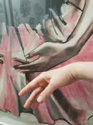

I met them in the 12th year of my life. No, I had had hands before then; they were a part of me, and I used them just like everything else given to me from birth. But I truly saw them for the first time only 11 years later.I was lying in bed, getting ready for sleep. I was sick in my human loneliness — it was tonsillitis, but it was already passing. I wanted to sleep, yet not quite; my thoughts wandered around the room looking for something interesting to catch onto and take along on the road into dreams. And then I saw them. I opened them before me, turned them palms toward myself, then the other way around, bent my fingers slightly, straightened my wrists... and I saw... I saw their face!
No, I didn’t see a mouth, eyes, or a nose. I saw a true face that spoke to me more emotionally than all the sounds escaping my mouth; that looked at me deeper than the eyes in a mirror; that grieved with me closer than the rivers of tears from my eyes.
Here, a hand clenches into a fist — tight, so tight that the nails dig into the veins of the palm — the face of the hand is in pain, it feels my pain and contracts. Here is that very same fist, but filled with strength, charged with the resolve of a compressed spring — it is ready for a fight, it will fight alongside me to preserve what is dear to us. And here, this same fist holds all its strength on the outer perimeter, while a safe space is created inside — the fist is tense and locked into a gentle hold around a tiny life within itself: a ladybug, a grasshopper, a small living secret.
And now the fingers instantly straighten, the palm tightens with the steel of tendon cables, the sky opens up — right now it is a runway: fly, ladybug, the hand lets go, gifting you the entire Universe.Hands (Part II)And now the fingers run like a fan, fast, so fast, like impatient little rays — the hand wants, the hand is in anticipation, something long-awaited is about to happen. The hand reaches out, it is ready, it has become a funnel, it anticipates and reaches, reaches, ready to sink in and lock its possession... and stops, as if in a freeze-frame — frustration. And suddenly, the hand slowly powers down, the strength drains from it, the breath leaves it, it drops with all its weight, obeying gravity, it is in despondency, it is in bewilderment...
But look, it shudders with a jolt of hope. Another energy, still very hesitant, pours into the fingers, shining with a blue attention; the hand is ready to search... The fingers have turned into searching flashlights, every cell of the skin's surface is a scanner, every finger a probe. The hand crawls along the surface, creeps into crevices, envelops curvatures and... oh, flinches from shock. A sting. Pain. The hand freezes, trying to understand what to do next. The pain subsides, the hand softens, searches further, but now more cautiously, with a watchful tension. It will not back down, it must find it; it begins to tremble from the anxiety of uncertainty — what if it doesn't find it? What if it's looking for the wrong thing? What if it's in the wrong place?

...There! That's it! Found it! The hand becomes warm, endless rows of joy run along it, it shines, it begins the touch — magic penetrates like a tickle under the thin skin of the fingertips, then flows down the phalanges, across the palm, the wrist. The hand has found the second hand.
They embraced. Gently at first — they are recognizing each other, confirming. Recognized, pressed together, the grip grows. Now they are tightly pressed against each other, they are fusing, they want to be one. They hold onto each other as if onto the sole anchor in the entire Universe. They are a lock. They fill with each other's strength, memorizing each other's shape: bones, ligaments, framework, dynamics. They have doubled each other's strength through recognition and confirmation.
They are together.The tranquility of serenity slackens their grip, playful waves of joy begin to flow through the hands. The hands make merry, they dance, they are overflowing with energy, they want to dissolve and contract, to dance, to play, to throw and to catch — they just want to exist within the meaninglessness of the river of constant actions. And then, just like children called home, they obediently calm down, lower themselves onto the surface of my blanket, listen to the rhythm of my heart, and align with the tempo of my breathing. We are ready to sleep. The hands fill with a resilient softness, fold together, take the weight of the head upon themselves, creating a field of safety: the comfort of home, the tenderness of a mother, the gentleness of a kiss. They become doors into the land of dreams. They quiet down, freeze, sleep. We are sleeping. We are not here.